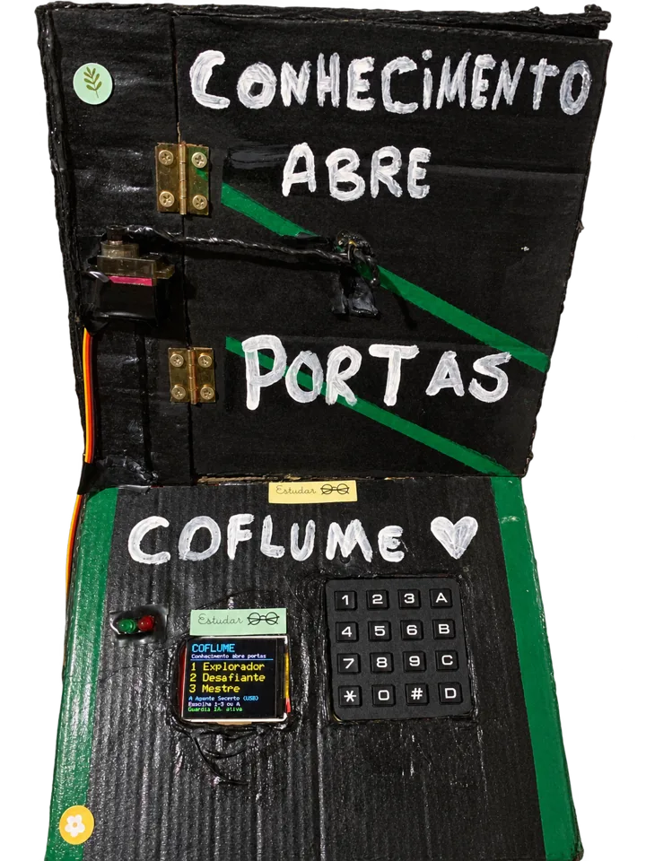

Hardware · IA embarcada
Coflume

Um cofre educacional abre com dois acertos em três perguntas. A Guardiã IA roda no ESP32-S3 e adapta a dificuldade durante a partida.
Ver código do CoflumeEngenharia de Software · NOC
Trabalho com monitoramento e construo projetos que juntam código, eletrônica e curiosidade.
Hardware · IA embarcada

Um cofre educacional abre com dois acertos em três perguntas. A Guardiã IA roda no ESP32-S3 e adapta a dificuldade durante a partida.
Ver código do CoflumeTCC · Software
Projeto para capturar ações de um processo e transformar seus registros em fluxogramas e procedimentos operacionais.
Estudo Engenharia de Software na UniGoiás e atuo como analista de NOC. Uso Zabbix, Grafana e GLPI para acompanhar alertas e registrar ocorrências de infraestrutura.